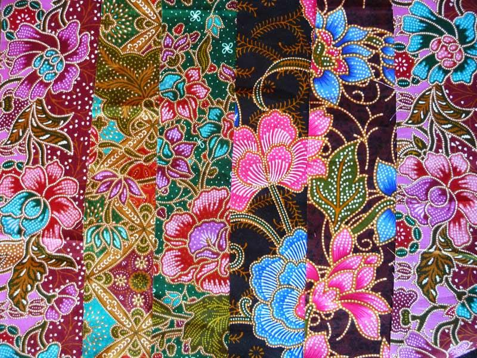
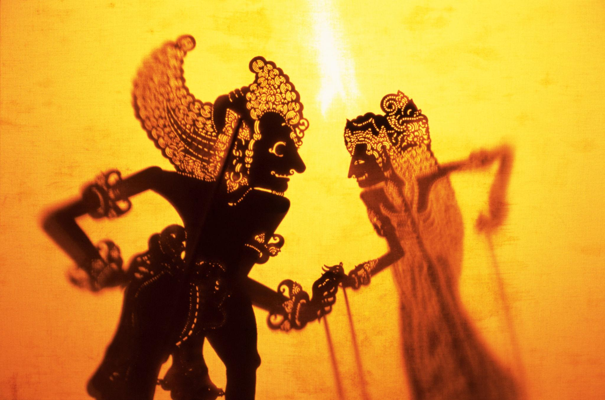

A cultura da Indonésia é extremamente diversa, refletindo a grande quantidade de ilhas, povos e tradições presentes no país.
Com mais de 300 grupos étnicos, cada região possui costumes, línguas e práticas culturais próprias, formando um rico mosaico cultural.
As manifestações artísticas são muito valorizadas, com destaque para o batik, uma técnica tradicional de tingimento de tecidos, e o wayang kulit, um teatro de sombras que representa histórias mitológicas e religiosas.
As danças típicas também são marcantes, sendo utilizadas em cerimônias e eventos culturais, muitas vezes acompanhadas por músicas tradicionais.
A religião exerce forte influência na cultura indonésia, com predominância do islamismo, mas também com a presença do hinduísmo, budismo e cristianismo, especialmente em regiões como Bali.
A culinária é outro elemento importante, caracterizada pelo uso intenso de especiarias e sabores marcantes, com pratos típicos como o nasi goreng e o satay.
De modo geral, a cultura da Indonésia é dinâmica, tradicional e profundamente ligada à identidade de seus povos, sendo expressa no cotidiano, nas festas e nas práticas sociais.
dança Kecak (teatro + ritual)

batik (arte em tecido)

wayang kulit (teatro de sombras)